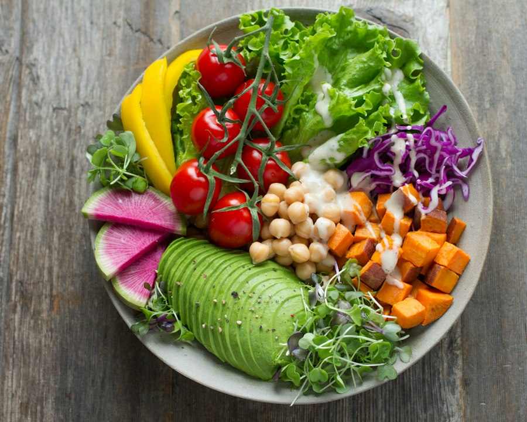

{점심 · 볼}
레인보우 아보카도 파워볼
부드러운 아보카도, 구운 고구마, 병아리콩, 아삭한 채소를 층층이 담은 컬러풀한 식물성 볼. 균형 있고 든든하며 30분 안에 완성됩니다.
요리 시작재료
- 잘 익은 아보카도 1개
- 삶은 병아리콩 1컵
- 구운 고구마 1컵
- 방울토마토 ½컵
- 채썬 적양배추 ½컵
- 수박무 4쪽
- 믹스 그린 2컵
- 레몬 올리브오일 드레싱 3큰술
만드는 법
- 깍둑썬 고구마를 200°C에서 부드럽고 겉이 살짝 갈색이 될 때까지 구워주세요.
- 볼 두 개에 채소를 깔고 병아리콩, 고구마, 양배추, 토마토, 수박무를 올려주세요.
- 슬라이스한 아보카도를 부채꼴로 올리고 레몬 올리브오일 드레싱을 뿌립니다.
- 소금과 신선한 허브를 살짝 뿌려 바로 즐기세요.